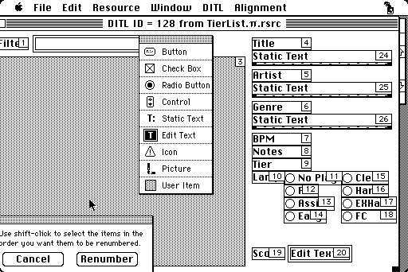

Welcome to my home on the World Wide Web! Feel free to take a look around. This site should work with pretty much any web browser ever created. If you find any bugs, please email me!
I have been a visitor to Arcade UFO since 2013 and became one of the owners in 2017. Our team is dedicated to bringing the authentic Japanese game center experience to Austin! We primarily feature rhythm games (BEMANI, etc.) and fighting games (everything from Super Turbo to PS5 titles). We also have some shmups from CAVE, a wide selection of SEGA NAOMI titles, and a few classics!
We recently moved to an amazing new location at 9029 Research Blvd. Come check us out if you're in the area!
I do a fair amount of electronics repair and also spend quite a bit of time making obscure software/hardware combinations work out. Here are some notes I've taken in these situations, so they might help someone else trying to do the same thing. (these are all TODO for now, will be adding more ideas as I think of other procedures I've done)
Here are some of the programming projects I've been working on. Most of these are focused on retrocomputing, but not for nostalgic reasons - programming for old systems is just fun because it's actually possible for one person to mostly understand everything that's going on, from the CPU up.
This is in contrast to how I develop professionally, where I use the modern tools and processes necessary to produce a high-quality, maintainable product, no matter how many layers of abstraction are involved. :-)
You can click any of the screenshots in this section to open a full-size view!
This is a Game Boy emulator for System 6.
This application allows you to track your scores on level 11 and 12 notecharts in beatmania IIDX. Screenshots are from the Mini vMac emulator, but this has also been successfully tested on a real Macintosh Plus!

|
|
| the finished product | ResEditing |
|  |

|
| designing main dialog | Think Pascal debugger |

|
||
| (click for 996k animated GIF) | (250k full-size PNG) |
I've worked on the Quest and Quest 2 at Oculus, the FullStory mobile SDK, the Shop app at Sysco Foods, HipChat/Stride (RIP) at Atlassian, and Evernote's Android app.
I attended the University of Texas at Austin from 2013 to 2016 and graduated with a degree in computer science.


Last updated 21 Mar 2024
{kind=link}
{kind=link}
{kind=link}
{kind=link}